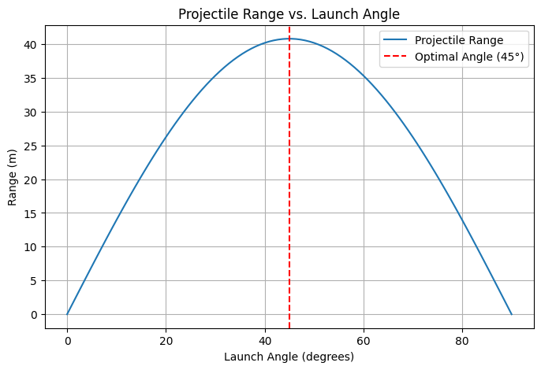
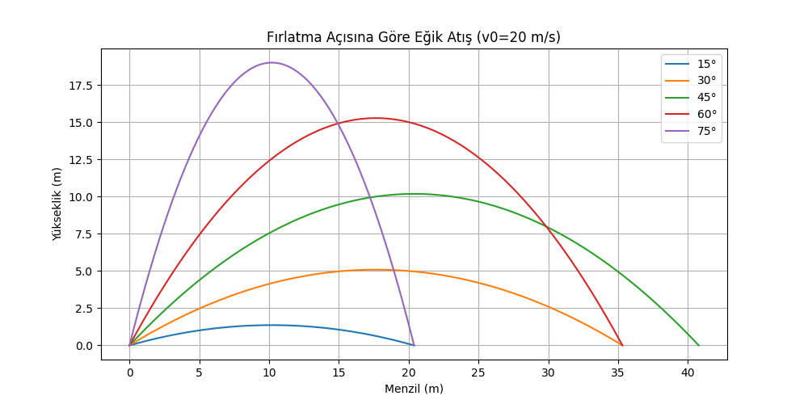
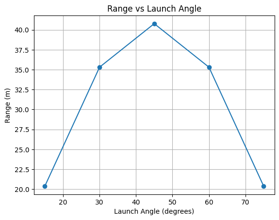
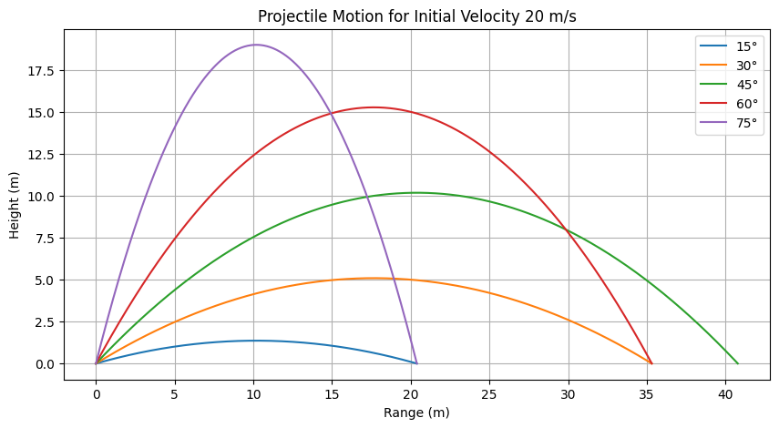

Certainly! Here's a paraphrased version of the entire task while preserving all technical content and meanings, and not altering the equations or conclusions:
Problem 1
1-1. Theoretical Derivation
The motion of a projectile can be described using Newton's second law. When air resistance is neglected, the kinematic equations govern the system:
Horizontal motion:
(This is uniform motion as there is no horizontal acceleration.)
Vertical motion:
(Gravity acts downward, causing vertical acceleration.)
To compute the range \(R\), determine the time when the projectile returns to the ground by setting \(y(t) = 0\):
Substitute this into the horizontal position equation:
Using the identity \(2 \sin(\theta) \cos(\theta) = \sin(2\theta)\), the range formula becomes:

1-2. Theoretical Analysis of the Range
Equations of Motion
Projectile motion without air resistance can be modeled as:
Horizontal displacement:
Vertical displacement:
Where:
- \(v_0\) is the initial speed,
- \(\theta\) is the launch angle,
- \(g\) is gravitational acceleration.
Time of Flight
To find how long the projectile stays airborne, solve \(y(t) = 0\):
Range Equation
Insert \(t_f\) into the horizontal equation:
Applying the identity again gives:
Analysis & Observations
- The maximum range is achieved at a 45° launch angle.
- The range is symmetric around 45°, meaning 30° and 60° yield the same result.
- Increasing \(v_0\) leads to a larger range.
- Higher \(g\) values reduce the range.
Limitation: Air resistance is not accounted for, which would reduce the ideal launch angle slightly below 45° in real situations.
1-3. Key Equations of Projectile Motion
1. Equations of Motion
When a projectile is launched with an initial velocity \(v_0\) at angle \(\theta\):
Horizontal:
Vertical:
2. Flight Time
Find when the projectile hits the ground by setting \(y = 0\):
3. Maximum Height
Occurs when vertical velocity becomes zero:
4. Range
Horizontal distance covered:

1-4. Project Summary: Simulation & Analysis of Projectile Motion
Motivation:
Projectile motion is a foundational topic in physics, illustrating the effects of angle and velocity on a body’s trajectory. While simple, it reveals principles relevant to many fields, such as ballistics or sports.
Objective:
Create a computational model that simulates projectile motion and visualizes how the range varies with launch angle, taking into account variables like velocity, gravity, and height.
Implementation Strategy:
Mathematical Framework:
- Horizontal motion:
$$ x(t) = v_0 \cos(\theta) \cdot t $$
- Vertical motion:
$$ y(t) = v_0 \sin(\theta) \cdot t - \frac{1}{2} g t^2 $$
Where:
- \(v_0\) = initial speed
- \(\theta\) = launch angle
- \(g\) = gravitational acceleration
Computational Model:
Use Python, leveraging NumPy for numerical calculations and Matplotlib for plotting.
Simulation Tasks:
- Calculate the range for varying launch angles.
- Plot range vs. angle graphs under different initial speeds and conditions.
- Adjust gravity and initial height to observe their effects.
Visual Outputs:
- Range vs. angle plots for multiple velocities.
- Visualization of optimal launch angles depending on speed.
Evaluation:
- Analyze how different parameters affect motion and range.
- Determine the angle that maximizes range in various scenarios.
Model Assumptions:
This simulation assumes:
- No air resistance
- Constant gravitational field
- Flat ground level
Future Considerations:
- Examine how resistance, wind, and launch height alter trajectories.
- Suggest improvements for modeling more realistic conditions.
 
Let me know if you need this translated into another language or turned into a report/document format.